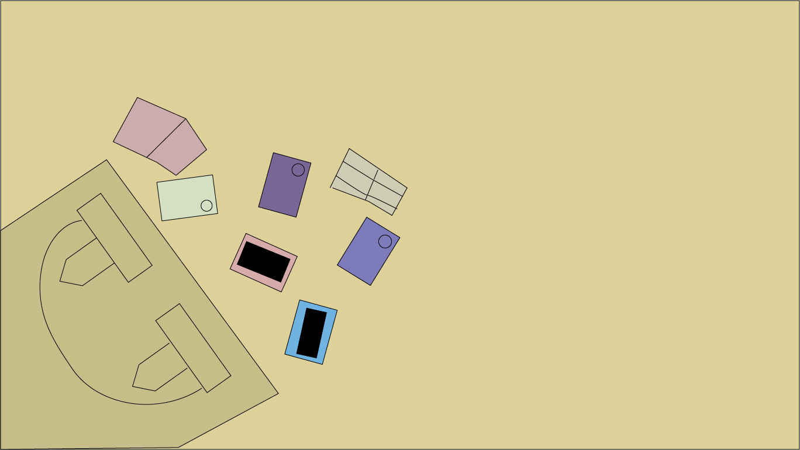

“You know I can see you right”,
James said to the man who had ducked under the bed.
“Oh “haha” he said.
James noticed that he had emerged without the giant bag he was holding before.
Curious James waited for him to leave
To James' surprise he leaves instantly,
like he was dying to get out of there, but was stopped by Ella.
“Dad? What are you doing here?”
“Um” “Just visiting”, and with that he left.
Odd. James then goes under the bed and checks the bag.
To his confusion it was a bunch of cell phones,
and “is that someone’s wallet”.
Ella walked over then curious as well
James opened the wallet.
To his surprise there was money in all of them.
James and Ella both looked at each other in confusion.
Ella went out to see where her dad had gone.
But it was too late he had already left.
“So what do we do?”
Asked James, “We don’t even know whose these items belong to, so it’s not like we can return it.”
Suddenly the phone rang, “Hello, oh okay we’ll be right there.”
“Problem solved! He stole those phones and wallets from the fashion show.
I just got a call that people are panicking because they lost all their personal belongings.”
“Well why are you just standing there, let's go”.
The next morning.
“Guys I see dad remember the plan.. Great”.
Everyone from the fashion show went to hide, while the dad walked in.
The first thing he noticed were his two daughters sitting there eating breakfast.
“Oh”, he exclaimed “you scared me”.
“Don’t mind me here, I just want to go get something real fast..”
“Did you come here yesterday?” asked Anastasia.
“Erm yes, and I left something behind so…”
“Why didn’t you wait for us to come home?
We missed you, you haven’t visited in years.”
“Really. You guys missed me!
I thought you actually wanted nothing to do with me anymore”.
“Why would you think that?”
“Um, no reason, so do you guys want to have some father daughter fun time?
Since you said you missed me.”
“We would love to, but we were just heading out.
We were gonna help Ella catch a thief.
Apparently everyone’s phones and wallets were stolen at the fashion show yesterday.
So strange, the culprit must’ve acted fast,
because we didn’t even see any car driving out of the event, a few minutes after everything was stolen.
Anyways bye dad”. And with that they left
Everyone else still in the house watched from their hiding spot as the dad headed towards the bedroom.
They slowly followed.
They watched the dad look under the bed and say to himself,
“That’s weird. I'm pretty sure I left it here.”
“Looking for this?” said Ella.
The dad turned around in shock.
“Dad, why did you go around stealing other people’s phones and wallets yesterday?
Were you trying to ruin my fashion show on purpose?”
“Listen, I can explain.”
“Explain w-” suddenly everyone turned frozen except the dad.
As everyone was frozen Elenor appeared and tried to snatch the empty bag not knowing there's nothing in there.
She also found out that her powers stopped working at the moment,
and that’s when everyone unfroze to see Elenor declare that her life was officially over.
“What happened?”
“Anyway dad we all know it was you who stole people’s wallets and phones and that Elenor assisted.
Dad, you have to make things right.
I know you're not a bad person.”
“Your’e right we should call everyone from the party to give them their devices back”.
“You don’t have to, we already did.
But at least you admitted that what you did was wrong.”
“One more thing though , why did you do it?”
“Well I guess I just got greedy for money, cause you and your sisters were doing so well and never left money for me.”
“Dad, you never asked for money, how were we supposed to know how you felt?
Of course if you asked we will be happy to send you money.
After all, you are our dad.” “Really, okay”.
“One more thing, since Elenor is suffering the consequences of her actions you should too.
Which is why you are on cleaning duty for our house now.” “Okay”